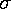

NOTE: this page, written by Tom Kirkman, can be found at URL: http://www.physics.csbsju.edu/stats/ and is included here with the author permission.
They are different, but not different enough to matter -- like the maple leaves off the tree in my yard, when all I want to do is rake them up.Roald Hoffmann, 1981 Nobel Laureate in Chemistry
from: The Same and Not the Same
If you were to measure the size of 10 maple leaves you would quickly find that maple leaves in fact come in different sizes. Thus it is impossible to report the size of maple leaves, instead the best you can do is to report a typical size and give some estimate of the range of variation above and below that typical size. The attempt to capture the full meaning of "the size of maple leaves" in a few numbers is bound to fail -- Nature really is more complex than our descriptions of it. Nevertheless if our choice is to be silent on "the size of maple leaves" or to provide a list of the size of every maple leaf in the world (on this day) or to provide a few summarizing numbers, the last is the best choice. This page introduces a handful of statistics which are commonly used to describe the distribution of data.
There are several common methods of selecting a "typical" value for data. The most common method is the average or mean. To obtain an average value, add up all your data values and divide by the number of data items. If X01 is the length of your first maple leave, X02 the length of your second maple leave, etc., then the average maple leaf length is:
(X01+X02+X03+ X04+X05+X06+ X07+X08+X09+ X10)/10 = Xavg
To obtain the median value, first sort your list of leaf-lengths from lowest to highest:
{5.1, 7.2, 4.1, 9.5, 6.7, 7.8, 8.5, 7.0, 7.3, 9.0} becomes:
{4.1, 5.1, 6.7, 7.0, 7.2, 7.3, 7.8, 8.5, 9.0, 9.5}
and then select the value in the exact middle as the median. (It turns out that if the number of items is even, as in this example, there is no exact middle. 7.2 is 5 places from the front and 6 places from the back; 7.3 is 6 places from the front and 5 places from the back. So with even-numbered data sets, average the two near-middle values, producing Xmed=7.25 in this example.)
The mode "typical" value will be of less use to us: it is the most repeated value in the data set. In the above example, no value is repeated (each value occurs exactly once). This is commonly the case with so few data items; hence its limited utility for us.
The geometric mean is useful for "log-normal distributions". To obtain the geometric mean, multiply all the numbers together and then take the result to the power 1/N (where N is the number of data items -- 10 in our example). So the geometric mean is:
(X01·X02·X03· X04·X05·X06· X07·X08·X09· X10)1/10 = Xgeo
The most common way to describe the range of variation is standard deviation (usually denoted by the Greek letter sigma:  ). The standard deviation is simply the square root of the variance, so lets start by describing the variance. To obtain the variance start by subtracting the average from each data item. Since there will be about as many items above average as below average, the resulting list of numbers will have about as many positive values as negative values. (In fact this list of deviations-from-average must itself average to zero!) Square each deviation, and proceed to find the average of the squared-deviations. However, in finding the average squared-deviation, divide by N-1 rather than N. The result is the variance; take its square root to get the standard deviation.
variance = ( (X01-Xavg)2 + (X02-Xavg)2 + (X03-Xavg)2 + ··· + (X10-Xavg)2 )/9
For data that is "normally distributed" we expect that about 68.3% of the data will be within 1 standard deviation of the mean (i.e., in the range Xavg ± ). In general there is a relationship between the fraction of the included data and the deviation from the mean in terms of standard deviations.
Fraction Number of Standard of Data Deviations from Mean 50.0% .674 68.3 1.000 90.0 1.645 95.0 1.960 95.4 2.000 98.0 2.326 99.0 2.576 99.7 3.000Thus we should expect that 95% of the data would be within 1.96 standard deviations of the mean (i.e., in the range Xavg ± 1.96 ). This is called a 95% confidence interval for the sample.
The average deviation or mean absolute deviation is calculated in a similar manner as standard deviation, except here you subtract the median from each data item producing a list of deviations from the median. Instead of squaring each deviation, you absolute value of each deviation. Finally you average in the usual way: using N not N-1.
average deviation = ( |X01-Xmed | + |X02-Xmed | + |X03-Xmed | + ··· + |X10-Xmed | )/10
If the data is "normally distributed" there is a definite relationship between the average deviation and the standard deviation:
average deviation = 0.80 × standard deviation;
where 0.80 = (2/pi)½.
/N1/2
Thus the deviations expected equal the standard deviation of the length of leaves if you "average" over just one leaf, and decrease as the square root of N as N increases. Thus one can expect to get quite close to the exact mean if the sample size N gets very big.
There is one additional distribution you should know a bit about: the Poisson distribution. The Poisson distribution particularly applies to counts of things, like the number of maple trees per acre or the number of radioactive decays. The main upshot is that with things distributed according to the Poisson distribution, the standard deviation of the count equals the square root of the mean count.